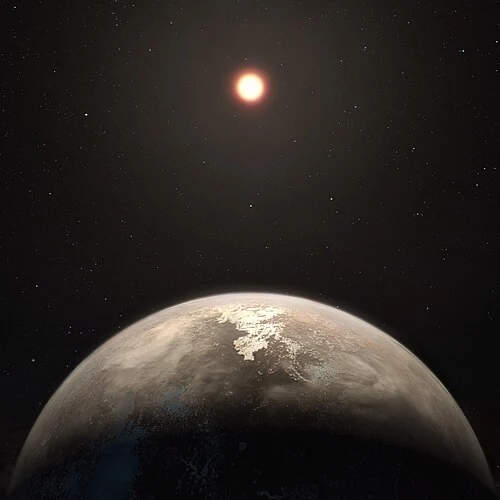

Ross 128 b — Exoplaneta

Introdução e História
Ross 128 b é um exoplaneta rochoso do tamanho da Terra que orbita a estrela anã vermelha Ross 128, a apenas cerca de 11 anos-luz da Terra — um dos vizinhos estelares mais próximos fora do Sistema Solar.
Foi descoberto em 2017 por meio de observações de velocidade radial usando o espectrógrafo HARPS, instalado no Observatório de La Silla (Chile), revelando um planeta com massa semelhante à terrestre orbitando uma estrela relativamente calma.
Características Físicas: Massa e Órbita
Ross 128 b tem pelo menos cerca de 1,35 vezes a massa da Terra, sugerindo uma composição rochosa.
Ele orbita sua estrela a cerca de 0,0496 UA e completa uma volta aproximadamente a cada 9,9 dias terrestres, indicando uma órbita muito próxima de sua estrela.
Como o planeta não apresenta trânsitos observáveis, seu raio e densidade ainda não foram diretamente medidos, mas modelos físicos sugerem que seria ligeiramente maior que a Terra.
Potencial de Habitabilidade
- Zona Habitável: Ross 128 b está localizado perto do limite interno da zona habitável de sua estrela, onde a energia recebida poderia permitir água líquida na superfície, caso exista uma atmosfera.
- Temperatura Estimada: Modelos indicam temperaturas de equilíbrio comparáveis às da Terra sob certas condições de albedo.
- ⚠Atmosfera Desconhecida: Ainda não há medições diretas da atmosfera, o que dificulta avaliar a verdadeira habitabilidade.
Devido à sua proximidade e características orbitais, Ross 128 b é considerado um dos exoplanetas mais promissores para estudos futuros de habitabilidade fora do Sistema Solar.
Curiosidades
Ross 128 b é o segundo exoplaneta terrestre mais próximo conhecido na zona habitável, ficando atrás apenas de Próxima Centauri b.
A estrela Ross 128 é comparativamente tranquila — o que reduz a radiação prejudicial — fazendo desse planeta um alvo atraente para futuras observações de atmosfera e possíveis sinais de bioassinaturas.
Origem do Nome
O nome “Ross 128 b” segue a nomenclatura astronômica padrão: o nome da estrela hospedeira (Ross 128) seguido de uma letra (“b”) que indica o primeiro planeta descoberto naquele sistema. Não há referência mitológica, pois trata-se de uma designação científica.
Referências
- NASA. Ross 128 b — Exoplanet Exploration / NASA Science. Disponível em: https://science.nasa.gov/exoplanet-catalog/ross-128-b/ . Acesso em: 26 dez. 2025.
- ESO. Calm Red Dwarf Has Potentially Habitable Planet. Disponível em: https://www.eso.org/public/news/eso1736/ . Acesso em: 26 dez. 2025.